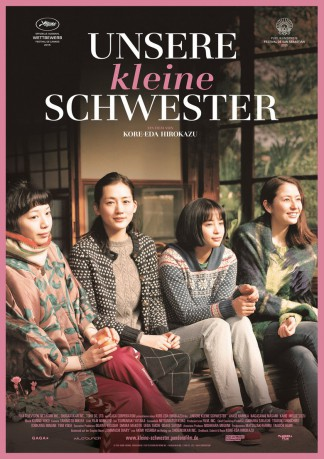

#4350 Unsere kleine Schwester
Alternativ: Our Little Sister (Englischer Titel)
 
 IMDB-Wertung: 7.6 / 10
IMDB-Wertung: 7.6 / 10  Metascore: 0
Metascore: 0 
Die Schwestern Sachi (Haruka Ayase), Yoshino (Masami Nagasawa) und Chika (Kaho) leben gemeinsam in einem großen Haus in Kamakura, einer Küstenstadt unweit von Tokio. Zur Beerdigung ihres Vaters, der die Familie vor 15 Jahren verlassen hat, reisen die drei jungen Frauen aufs Land. Dort treffen sie ihre Halbschwester Suzu (Suzu Hirose), die nun auf sich allein gestellt ist. Obwohl sie die schüchterne 13-Jährige kaum kennen, bieten sie ihr kurzerhand an, zu ihnen nach Kamakura zu ziehen. Suzu nimmt die Einladung an und so beginnt für die vier Schwestern ein neues Leben, in dem zwar die Vergangenheit ihren Platz hat, aber einzig die Gegenwart zählt.
Jahr: 2015
Dauer: 128 Minuten
FSK:
Land: Japan Studio: Pandora Film VerleihTonspuren: DD5.1 - ,
Untertitel: Deutsch,
Auflösung: 1080p (1920x1040) Größe: 8386 MB
Genre: Komödie, Drama
Regisseur: Hirokazu Koreeda
Drehbuch: Fred Breinersdorfer
Soundtrack:
Darsteller:
 Masami Nagasawa als Yoshino Kôda
Masami Nagasawa als Yoshino Kôda- Suzu Hirose als Suzu Asano
 Ryô Kase als Yoshimi Sakashita
Ryô Kase als Yoshimi Sakashita- Ryôhei Suzuki als Dr. Yasuyuki Inoue
- Shin'ichi Tsutsumi als Dr. Kazuya Shiina
 Kirin Kiki als Fumiyo Kikuchi
Kirin Kiki als Fumiyo Kikuchi- Haruka Ayase als Sachi Kôda
- Kaho als Chika Kôda
- Takafumi Ikeda als Sanzo Hamada
- Kentarô Sakaguchi als Tomoaki Fujii
- Ohshirô Maeda als Fûta Ozaki
- Midoriko Kimura als Hideko Takano
- Yûko Nakamura als Yôko Asano
- Jun Fubuki als Sachiko Ninomiya
- Kazuaki Shimizu als Toshio Iida
- Kaoru Hirata als
- Masumi Nomura als Nurse
- Shinobu Ôtake als Miyako Sasaki
- Fight Seki als Masashi Ogata
- Saya Mikami als Miho Kaneko
- Fukiko Hara als
- Takamitsu Nonaka als
- Kanako Saitô als
- Yuki Kimura als Yoshimi Tokuno
- Yôko Ataka als Shino Yamane
- Ichirô Ogura als Konno
- Tokiko Kudô als
- Takuma Nagao als
- Kenji Masaki als
- Masanori Ikemura als
- Tooru Satô als
- Sanae Yûki als
- Mei Maki als
- Shin Sarashina als
- Kazuma Shibata als
- Koi Suzuki als
- Mito Kaneko als
- Eiko Saitô als
- Ryô Takahashi als
- Yasuhiro Konno als
- Makoto Konno als
- Waka Kagayama als
- Emiko Kudô als
- Miwako Ôba als
- Motoyuki Yamada als
- Takumi Yoshizawa als
- Yukihito Yoshida als
- Ikuya Ôta als
- Haruki Ono als
- Yûta Fukube als
Datei: X:\HD-Eastern-Modern(N-Z)\Unsere kleine Schwester (2015, FSK, 1920x1040).mkv seit 12.09.2016
Festplatte: HD Eastern+Western
 Es gibt insgesamt 76 Filme in der Gruppe 'HD-Eastern-Modern(N-Z)'
Es gibt insgesamt 76 Filme in der Gruppe 'HD-Eastern-Modern(N-Z)'